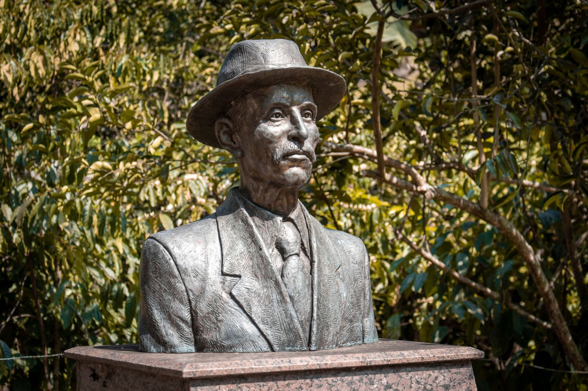
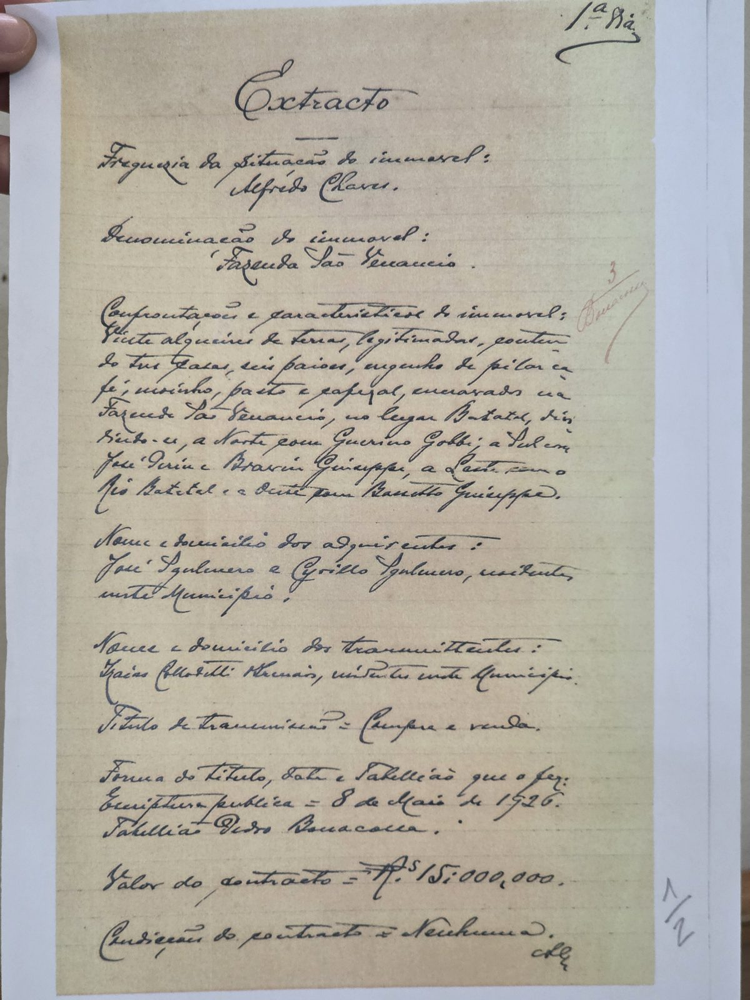
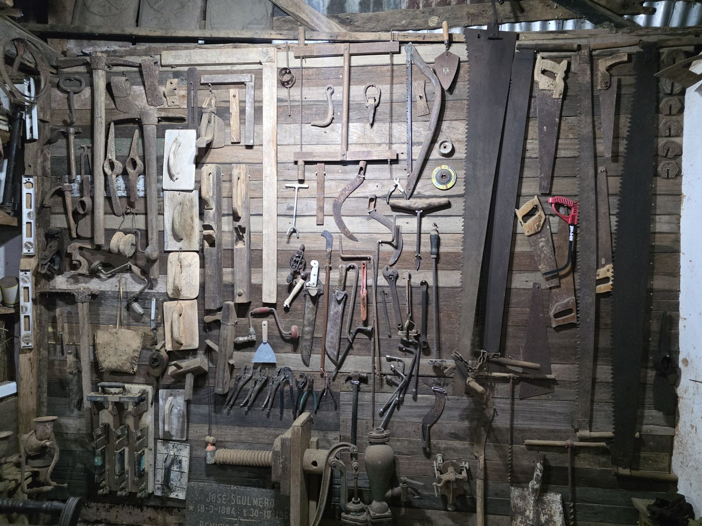
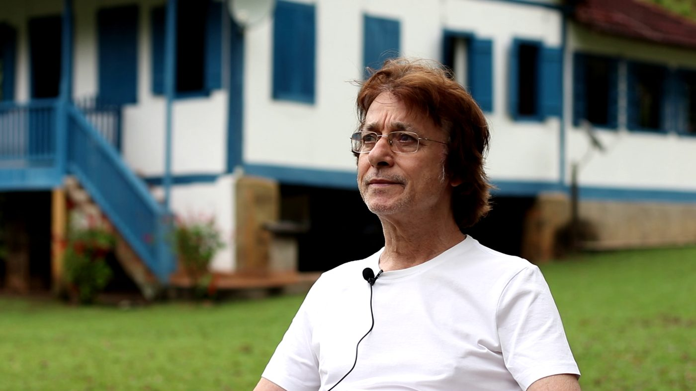

Batatal · Alfredo Chaves · ES
Casa da Memória da Família Sgulmaro
Fotografias antigas, documentos da fazenda e registros do comércio de café e banana. Ao lado, o Paiol dos Couros guarda as ferramentas de quem trabalhou nesta terra.
A casa grande da antiga Fazenda São Venancio
- 1847nasce Alessandro Sgulmaro, patriarca da família
- 1894Alessandro chega ao Porto de Benevente, vindo de Soave, Itália
- 1890–1900construção do Paiol dos Couros
- 1926escritura da Fazenda São Venancio
História
Uma família, uma fazenda e o trabalho no campo


Casas, paióis, engenho de pilar café, moinho, pasto e cafezal. Benfeitorias da Fazenda São Venancio descritas no extrato da escritura de 8 de maio de 1926, guardado na Casa da Memória.
Casa da Memória
Uma sala onde a família guarda seus registros
Estantes de livros e caixas de arquivo dividem espaço com painéis cobertos de fotografias: retratos, casamentos, festas, encontros de família e imagens das construções da fazenda, de diferentes épocas.
- 01
Fotografias antigas
Retratos e cenas de família, em preto e branco e coloridas, montadas em grandes painéis.
- 02
Registros da propriedade
Escrituras e documentos que contam como a fazenda foi formada e passou de mão em mão.
- 03
Café e banana
Registros de compra e venda das safras que sustentaram a fazenda e a região.
- 04
Livros e arquivos
Coleções da família, incluindo anais do Poder Legislativo municipal guardados por Osvaldo Sgulmaro.
Paiol dos Couros
Como o trabalho era feito antigamente
Ao lado da Casa da Memória, o antigo paiol guarda ferramentas de carpintaria e da roça, utensílios de cozinha, máquinas de costura e peças de montaria e carga.
O Paiol dos Couros foi edificado nos anos entre 1.890 a 1.900.Texto da placa na fachada, assinada por José Sgulmaro.
Explore as paredes
Toque nos pontos para conhecer as peças
As paredes do paiol funcionam como vitrines. Escolha uma delas e toque nos números para saber para que servia cada objeto.

Todo o acervo do paiol
A propriedade
A paisagem em volta do acervo
A visita continua do lado de fora: a casa grande, o riacho, a casa do moinho, o busto do patriarca e os marcos de pedra da antiga fazenda.
Batatal e Alfredo Chaves
O lugar onde essa história acontece
A fazenda da família Sgulmaro fica no vale do Batatal, uma das comunidades rurais de Alfredo Chaves. Jornais antigos e documentos do Arquivo Público do Estado ajudam a contar como a região se formou.
- 1880
Colônia Castello
Fundada nas cabeceiras do rio Benevente e emancipada em 1881, segundo o Jornal do Agricultor de 1886, que a associa à povoação de Alfredo Chaves.
- 1887
Estradas e pontes
Entre 1887 e 1890, documentos do Arquivo Público registram obras de estrada entre Batatal e a povoação e uma ponte sobre o rio Batatal.
- 1891
Nasce o município
Alfredo Chaves é criado em 24 de janeiro de 1891, desmembrado de Benevente, atual Anchieta.
- 1922
Barra do Batatal
Uma descrição do vale do Benevente publicada no Diário da Manhã passa pela Barra do Batatal a caminho da vila.
- 1927
Escola de Alto Batatal
Um ato de 9 de abril de 1927 nomeia uma professora para a escola mista de Alto Batatal.
Muitas origens
A história de Batatal não é só italiana. Estudos registram também famílias de origem alemã entre os primeiros moradores, e pesquisas sobre Alfredo Chaves lembram a presença indígena anterior às colônias e a cultura afro-brasileira do município. A memória guardada pela família Sgulmaro é uma parte desse quadro maior.

O curador
José Sgulmaro Neto
Filho de Alexandre Sgulmaro e Iolanda Dalvi Sgulmaro
Nascido em 1954 na casa principal da fazenda, José é a geração que hoje cuida do acervo da família. Por volta dos 18 anos, decidiu conhecer o mundo e partiu em viagem pelo Brasil. Foi caminhoneiro e depois entrou para o comércio, onde se tornou um grande comerciante de hortifrúti, sempre buscando o desenvolvimento e os negócios com a região onde nasceu.
Hoje vive no Rio de Janeiro, de onde exerce sua profissão, e é o curador da Casa da Memória da Família Sgulmaro e do Paiol dos Couros.
- 1954Nasce na casa principal da fazenda, em Batatal
- Cerca de 18 anosParte para conhecer o Brasil
- Na estradaTrabalha como caminhoneiro
- No comércioTorna-se grande comerciante de hortifrúti, ligado à sua região
- HojeVive no Rio de Janeiro e cuida da memória da família
Visite
Como conhecer a Casa da Memória da Família Sgulmaro
O acervo fica na comunidade de Batatal, zona rural de Alfredo Chaves. As visitas são acompanhadas pela família, que conta a história de cada peça.
- Onde
- Batatal, Alfredo Chaves – ES
- Curador
- José Sgulmaro Neto
- Horários e agendamento
- A confirmar com o responsável
- Contato
- A confirmar com o responsável
- Combine a visita com antecedência; o acervo é cuidado pela própria família.
- Grupos de escolas são bem-vindos para conhecer a história do trabalho no campo.
- Não toque nas peças sem orientação: muitas têm mais de cem anos.